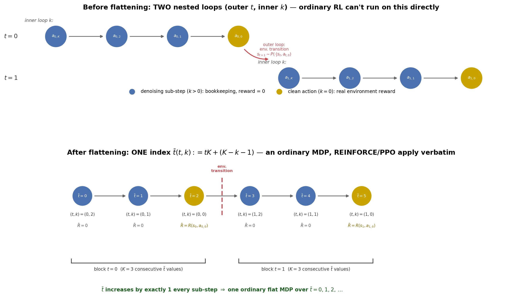
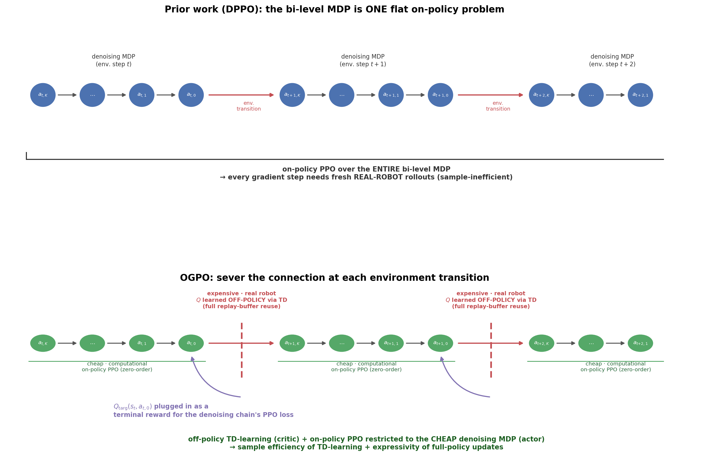
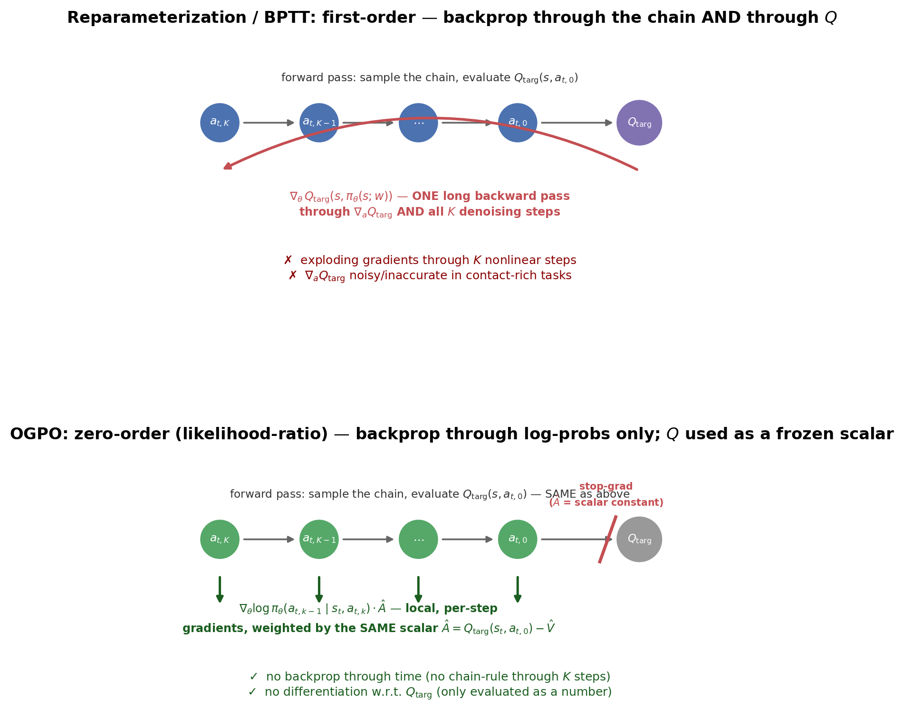

OGPO: Sample-Efficient Full-Finetuning of Generative Control Policies¶
arXiv:2605.03065 · project page · code
Part I — Setup¶
1. The tension OGPO is trying to resolve¶
A Generative Control Policy (GCP) is any policy parameterized as an iterative generative process — a diffusion or flow model that maps noise \(a_{t,K}\sim\mathcal N(0,I)\) through \(K\) denoising steps down to a clean action \(a_{t,0}\), conditioned on state \(s_t\) (Diffusion Policy, π₀'s flow head, etc.). Fine-tuning a pretrained GCP with RL had, before this paper, split into two camps that each give up something:
| Camp | Examples | Sample-efficient? | Expressive? |
|---|---|---|---|
| Partial/off-policy — steer initial noise, add a residual, or rank/BC-distill, on top of a frozen GCP | DSRL, EXPO, QC | ✅ off-policy critic reuses all past data | ❌ capped by the frozen decoder |
| Full on-policy — RL through the entire denoising process | DPPO, ReinFlow, RL-100 | ❌ every step needs fresh real rollouts | ✅ every one of the \(K\) steps gets updated |
OGPO's claim: you can get both, because "denoising steps" and "environment steps" have wildly different sample costs (Parts II–III). The rest of Part I is the background needed to make that claim precise.
2. Preliminaries: the RL toolkit this paper is built from¶
| § | Object | Key equation | Reused in |
|---|---|---|---|
| 2.1 | MDP, return, Q/V | Bellman consistency equation | §2.4 TD loss, §5/§6 critics |
| 2.2 | Action chunking | \(n\)-step TD critic target | every critic in the paper |
| 2.3 | On-policy PG (REINFORCE) | \(\nabla_\theta J=\mathbb E[\sum_t\nabla_\theta\log\pi_\theta(a_t\mid s_t)r_t]\) | §5, §7 verbatim |
| 2.4 | Off-policy TD | semi-gradient TD + Expected SARSA + ensemble target | §6's critic |
| 2.5 | on/off-policy × online/offline | 2×2 grid | classifies OGPO & RECAP (§11) |
| 2.6 | Bootstrapping | MC target vs. TD target | motivates §8's stabilizers |
2.1 The environment MDP, return, and Q/V¶
Derivation — why the Bellman equation holds (peel off the \(t=0\) term)
Peel off the \(t=0\) term of \(Q^\pi\) and re-index:
The inner expectation is exactly \(V^\pi(s_1)\), and \(V^\pi(s')=\mathbb E_{a'\sim\pi(\cdot\mid s')}[Q^\pi(s',a')]\) by definition — giving the boxed equation above. The TD loss in §2.4 is nothing but a sampled version of this identity.
2.2 Action chunking and the reward it induces¶
Executing an \(h\)-step chunk \(a_{t:t+h-1}\) open-loop as a single "action" of \(M_{\text{Env}}\) forces the critic's TD target to bootstrap \(h\) real steps ahead, collecting \(h\) real rewards along the way — plain \(n\)-step TD with \(n=h\) (collapses to §2.4's one-step loss when \(h=1\)):
2.3 On-policy policy gradient — REINFORCE¶
For \(\tau=(s_0,a_0,\dots)\sim p_\theta\) and \(G(\tau):=\sum_{t\geq0}\gamma^tR(s_t,a_t)\), so \(J(\theta)=\mathbb E_{\tau\sim p_\theta}[G(\tau)]\):
Derivation — log-derivative trick + causality (why only \(t'\geq t\) terms survive)
Step 1 (log-derivative trick). \(\nabla_\theta p_\theta(\tau)=p_\theta(\tau)\nabla_\theta\log p_\theta(\tau)\), so \(\nabla_\theta J(\theta)=\mathbb E_{\tau\sim\pi_\theta}\big[\nabla_\theta\log p_\theta(\tau)\cdot G(\tau)\big]\).
Step 2 (only policy factors depend on \(\theta\)). \(P_0,P\) are environment-fixed, so \(\nabla_\theta\log p_\theta(\tau)=\sum_{t\geq0}\nabla_\theta\log\pi_\theta(a_t\mid s_t)\) — giving a double sum over \(t\) (log-prob) and \(t'\) (from \(G(\tau)\)).
Step 3 (causality kills "future policy, past reward" terms). For \(t'<t\), \(R(s_{t'},a_{t'})\) is measurable before \(a_t\) is drawn, so by the tower rule $$ \mathbb E\big[\nabla_\theta\log\pi_\theta(a_t\mid s_t)\cdot R(s_{t'},a_{t'})\big] =\mathbb E\Big[\underbrace{\mathbb E_{a_t\sim\pi_\theta(\cdot\mid s_t)}\big[\nabla_\theta\log\pi_\theta(a_t\mid s_t)\big]}{= \nabla\theta\int\pi_\theta(a\mid s_t)\,da = 0}\cdot R(s_{t'},a_{t'})\Big]=0. $$ Only \(t'\geq t\) survives, giving the boxed result. The same zero-expectation identity licenses subtracting any baseline \(\hat V(s_t)\) from \(r_t\) for free — the source of the advantage estimator \(\hat A=r_t-\hat V(s_t)\) used throughout the paper (and PPO).
This exact derivation is reused verbatim in §5 and §7, just relabeling \((s,a,t)\).
2.4 Off-policy RL: the TD loss is the Bellman equation, sample-approximated¶
| Ingredient | Why it's there |
|---|---|
| \(Q_{\mathrm{targ}}\) = Polyak copy, \(\bar\phi\leftarrow(1-\tau)\bar\phi+\tau\phi\) | Semi-gradient TD — never differentiate through the target, or you chase a constantly-shifting goal |
| \(a_{t+1}\) freshly sampled from \(\pi_{\bar\theta}(\cdot\mid s_{t+1})\), not from the buffer | Expected SARSA, not Q-learning — and exactly why old \((s_t,a_t,r_t,s_{t+1})\) from any past policy stays valid: only the bootstrapped \(a_{t+1}\) must match the current policy |
| \(Q_{\mathrm{targ}}=\frac1M\sum_iQ_{\bar\phi_i}\) (ensemble mean) | double-Q/REDQ-style guard against value overestimation |
This is the object that gets severed away from the denoising process in §6 and trained purely on real (expensive) environment transitions.
2.5 On-policy/off-policy vs. online/offline — two independent axes¶
On-policy = the training target is defined as an expectation under the current policy (§2.3) — the moment \(\theta\) changes, data from the old \(\theta\) is a biased sample of a different expectation, not just "stale." Off-policy = the target is defined by something policy-independent, e.g. §2.4's Bellman equation, where \(s'\sim P(\cdot\mid s,a)\) and \(R(s,a)\) are facts about physics, not about who chose \(a\) — so any past transition stays valid forever (only the bootstrapped \(a_{t+1}\) needs resampling under the current policy).
Online = the environment keeps producing fresh transitions throughout training. Offline = training runs against one dataset, collected once, that never grows. Crossing the two axes:
| On-policy | Off-policy | |
|---|---|---|
| Online | PPO/REINFORCE's policy update: rollout, use once, discard, resample | OGPO's critic: environment queried forever; TD loss trains on the whole accumulated buffer |
| Offline | (empty — on-policy demands data matching an ever-changing \(\theta\)) | Classical offline RL (CQL, IQL, …): one fixed dataset, no further contact |
OGPO, precisely: its policy update (§6–7) is on-policy but resampled for free (no real rollout needed); its critic (§2.4) is off-policy on an ever-growing buffer; the system is online throughout. §11 uses this to contrast OGPO (online) against RECAP (offline/iterated-batch).
Why not skip real interaction and go pure offline?
A fixed dataset never lets a critic's mistakes get checked against reality: if \(Q_\phi\) overestimates some out-of-distribution action, nothing in offline training can ever produce a transition that contradicts it — and since the policy optimizes against \(Q_\phi\), it walks straight into that overestimated region and stays there, undetected. (This is the OOD-overestimation failure mode CQL/IQL-style conservative regularizers exist to patch.) Staying online lets the real environment periodically correct the critic with an actual reward — off-policy training buys offline RL's data-reuse efficiency, while staying online buys back the safety net pure offline RL gives up.
2.6 What bootstrapping does, and why it needs stabilizing¶
| Target | Variance | Bias | |
|---|---|---|---|
| Monte Carlo (§2.3's \(r_t\)) | \(\sum_{\tau\geq t}\gamma^\tau R(s_\tau,a_\tau)\) — all real rewards | high (bakes in all future randomness) | none |
| TD / bootstrapped (§2.4) | \(r_t+\gamma Q_{\mathrm{targ}}(s_{t+1},a_{t+1})\) — one real reward + the critic's own guess for the rest | low | biased whenever \(Q_{\mathrm{targ}}\) is currently wrong |
Bootstrapping lets training start after a single transition instead of a whole episode, at the cost of building the target out of the critic's own (possibly-wrong) estimate — a self-referential structure that three pieces of machinery specifically patch: target networks (§2.4, stop the target from shifting mid-update), ensembles/min-over-critics (§8 Fix 2, stop an accidental overestimate at \((s_{t+1},a_{t+1})\) from compounding forward through every later bootstrapped update), and Expected SARSA (§2.4, avoid the extra maximization bias an explicit \(\max_a\) would add).
Does off-policy training make this worse?
Yes, but it isn't the root cause — bootstrapping itself is (it exists even on-policy, just more mildly). Off-policy training adds a wider, more heterogeneous buffer (more chances to hit poorly-covered actions) and lets any one bad estimate get reused across many future updates instead of being discarded after one on-policy batch — so an error that would fade quickly on-policy instead gets reinforced repeatedly. §8's stabilizers are the cost of safely combining bootstrapping with off-policy reuse, not a flaw specific to off-policy training alone.
3. Generative Control Policies, and why their density is intractable¶
3.1 GCPs¶
a_{t,K} --πθ--> a_{t,K-1} --πθ--> ... --πθ--> a_{t,0}
(pure noise) (clean action)
each arrow : a tractable per-step density ✓
whole chain : Law(a_{t,0} | s_t) — no closed form ✗
Running the recursion to \(k=0\) defines the marginal \(\pi_\theta(\cdot\mid s_t):=\mathrm{Law}(a_{t,0}\mid s_t)\) — this is "a GCP has no tractable log-probability": \(\pi_\theta\) exists, it simply has no closed form, since writing it down needs the Jacobian log-determinant of the \(K\)-step composite map (intractable for realistic action dimension and \(K\)). Everything in Part II is a strategy for never actually needing this marginal.
3.2 Flow-based GCP pretraining¶
The conditional flow-matching objective from FlowMatching.md, conditioned on \(s\):
Inference discretizes the reverse ODE with \(K\) Euler steps, re-indexed from the diffusion-style \(k=K\) (noise) down to \(0\) (clean action) via \(k=K(1-\tau)\), so it shares bookkeeping with diffusion-based GCPs elsewhere in the paper.
Paper OCR artifacts, fixed here
The paper's own Preliminaries section is missing an "\(a\)" coefficient in the interpolation (should be \(a_{(\tau)}=\tau a+(1-\tau)z\), or "target velocity \(=a-z\)" doesn't dimension-check) and states the boundary condition as \(a_{t,0}\sim\mathcal N(0,I)\) where it should read \(a_{t,K}\sim\mathcal N(0,I)\) — consistent with §3.1, where \(a_{t,K}\) is the initial noise and \(a_{t,0}\) is the final action.
Part II — The central obstacle, and how prior work routes around it¶
Both camps from §1's table have to somehow route around the fact that \(\pi_\theta(a_{t,0}\mid s_t)\) (§3.1) has no closed form. They do it in two structurally different ways — and OGPO (Part III) turns out to inherit Camp 2's resolution rather than invent a third one.
4. Camp 1's dodge: freeze the GCP, train something with an explicit density instead¶
The intractable-density problem only bites when you need a density of the GCP itself to compute a policy-gradient/likelihood-based update. All three Camp-1 methods sidestep this by freezing the GCP outright and only ever training a small auxiliary module whose own distribution is an explicit, simple one:
- DSRL (noise steering). Train a small policy \(\pi_\psi(z\mid s_t)\) — typically an explicit Gaussian, \(z=\mu_\psi(s_t)+\sigma_\psi(s_t)\epsilon,\ \epsilon\sim\mathcal N(0,I)\) — that chooses the initial noise \(z=a_{t,K}\) fed into the frozen decoder. \(\log\pi_\psi(z\mid s_t)\) is available in closed form by construction, so standard reparameterized actor-critic applies directly: \(\max_\psi\mathbb E_\epsilon[Q_{\mathrm{targ}}(s_t,\mathrm{Decoder}_{\text{frozen}}(s_t,\mu_\psi(s_t)+\sigma_\psi(s_t)\epsilon))]\). Gradients do pass through the frozen decoder's Jacobian, but only to inform \(\psi\) — the decoder's own weights never move, so there's none of the moving-target instability that plagues updating the decoder's own parameters this way.
- EXPO (residual). Same trick, applied after the GCP instead of before it: freeze \(a_{t,0}\), learn an explicit Gaussian residual \(\pi^{\text{res}}_\psi(\Delta a\mid s_t,a_{t,0})\), output \(a_{\text{final}}=a_{t,0}+\Delta a\). Again, standard reparameterized actor-critic on \(\psi\) alone; the GCP's own (intractable) density never enters the optimization problem.
- QC (Best-of-N + BC). Avoids likelihoods altogether. Best-of-N is pure forward evaluation + ranking (sample \(N\) candidates from the frozen GCP, score with \(Q_{\mathrm{targ}}\), take the arg max — no gradient, no density needed). Any further policy update is an ordinary behavior-cloning regression (the flow-matching MSE loss itself) fit to the top-ranked/successful actions — supervised regression never requires writing down \(\log\pi_\theta(a\mid s)\) in the first place.
The shared mechanism: once the GCP is frozen, its intractable density is irrelevant — it's just a fixed, differentiable (or non-differentiable, for QC) black box. Whatever does get RL-updated (a noise-selector, a residual, or nothing at all) lives in a space with an explicit, tractable distribution. This is also exactly the source of Camp 1's ceiling: nothing here can ever move the GCP's own generative capability past what it already learned at pretraining time.
5. Camp 2's dodge: DPPO turns the intractable marginal into a chain of tractable Gaussians¶
Step 1 — find one tractable ingredient to build the whole construction on.
Don't try to get a density for \(a_{t,0}\mid s_t\) (the full marginal) at all. Instead, use only the per-step transition densities, which for a diffusion policy are Gaussian by construction (the same DDPM reverse kernel from DDPM.md, with the fixed, closed-form scheduled variance you already know):
with \(\mu_\theta(\cdot)\) the same \(\theta\)-independent affine function of the predicted noise from DDPM.md, and \(\sigma_k^2\) a fixed, non-learned schedule. The full chain's marginal \(p_\theta(a^0\mid s)\) still has no closed form — but ✅ policy gradients and PPO ratios never need the marginal, only per-step densities, and here every per-step density is an explicit Gaussian.
Step 2 — flatten the two nested loops into one line.
Define a single lexicographic index
which just means: list every sub-step of block \(t=0\) first (in decreasing order of \(k\)), then every sub-step of block \(t=1\), and so on. Worked out for \(K=3\) (three denoising steps per real action), \(t=0,1\):
| \(\bar t\) | \((t,k)\) | state \(\bar s_{\bar t}\) | action \(\bar a_{\bar t}\) | reward \(\bar R_{\bar t}\) |
|---|---|---|---|---|
| 0 | \((0,2)\) | \((s_0,a_0^{3})\) — pure noise | \(a_0^{2}\) | \(0\) |
| 1 | \((0,1)\) | \((s_0,a_0^{2})\) | \(a_0^{1}\) | \(0\) |
| 2 | \((0,0)\) | \((s_0,a_0^{1})\) | \(a_0^{0}\) — clean action | \(R(s_0,a_0^0)\) |
| 3 | \((1,2)\) | \((s_1,a_1^{3})\) — pure noise | \(a_1^{2}\) | \(0\) |
| 4 | \((1,1)\) | \((s_1,a_1^{2})\) | \(a_1^{1}\) | \(0\) |
| 5 | \((1,0)\) | \((s_1,a_1^{1})\) | \(a_1^{0}\) — clean action | \(R(s_1,a_1^0)\) |
Notice \(\bar t\) just counts \(0,1,2,3,\dots\) with no gaps — that is the entire content of "flattening." In general, DPPO sets
Read off the table: every intermediate row (\(k>0\)) is bookkeeping — zero reward, a deterministic hand-off to the next row — while only the \(k=0\) row (⭐ in the table, gold in the figure) gets a real reward, and only there does the real environment actually advance: \(s_{t+1}\sim P(\cdot\mid s_t,a_t^0)\), with a fresh \(a_{t+1}^K\sim\mathcal N(0,I)\) drawn to restart the next block. Nesting the denoising MDP (\(k\)) inside the outer environment MDP (\(t\)) like this, then reading it off along the single flattened axis \(\bar t\), is exactly what "bi-level MDP" means.

Step 3 — identify the policy of this new flat MDP.
It's just Step 1's Gaussian kernel, relabeled:
Nothing changed mathematically here — this is the same object as Step 1's \(p_\theta(a^{k-1}\mid a^k,s)\), just wearing the new \((\bar s,\bar a)\) notation so it slots into the flat-MDP formulas below.
Step 4 — apply REINFORCE and PPO with zero modification.
Because \(\bar\pi_\theta\) is an explicit Gaussian (Step 3) living on an ordinary flat MDP (Step 2), the §2.3 REINFORCE derivation goes through literally unchanged — every "\(s,a,t\)" in that derivation gets relabeled "\(\bar s,\bar a,\bar t\)" and not one line of the proof needs to be redone:
Likewise, ordinary PPO's clipped-ratio objective drops in unchanged:
Concretely, at row \(\bar t=2\) of the table above, \(\bar\rho\) is just the ratio of two Gaussian densities — the current vs. old policy's probability of denoising \(a_0^1\to a_0^0\) — exactly one factor in the product \(\rho=\prod_{k=1}^K(\cdots)\) that reappears in §7.
Step 5 — derive the denoising-discounted advantage (why no per-\(k\) value function is needed).
5a. What we're avoiding, stated precisely.
The naive way to run PPO on the flat MDP of Step 2 would be to learn a value function of the flat state \(\bar V_\phi(\bar s_{\bar t})=\bar V_\phi(s_t,a_t^{k+1})\) — i.e., a separate value estimate for every one of the \(K\) denoising sub-states, not just for the \(T\) real states. The paper finds this actually hurts (the ablated design choice mentioned below): a diffusion policy is already highly stochastic, and asking a \(k\)-dependent value function to also absorb that stochasticity makes it noisier to learn. Step 5's whole goal is to show that you can get away with training only one ordinary value function \(\hat V_\phi(s_t)\) — exactly the one you already know how to train from §2.1 — and derive, rather than guess, how to correctly spread its signal across the \(K\) sub-steps.
5b. Set up the return-to-go, generally.
Suppose the flat MDP is discounted by one number \(\bar\gamma\) per \(\bar t\)-step (this is a hypothetical single discount for the derivation — Step 5f below revisits it). Then, exactly as in §2.3,
This is just "sum up all future (discounted) rewards from this row of the table onward" — the only question is which terms in that sum are actually nonzero.
5c. Watch the zero-reward terms disappear — a fully worked instance.
Extend the §5-Step-2 table one more block (\(t=0,1,2\), \(K=3\), so \(\bar t=0,\dots,8\), rewards nonzero only at \(\bar t=2,5,8\)), and compute the return-to-go at the very first row, \(\bar t=0\) (i.e. \((t,k)=(0,2)\)), by writing out every term of the sum instead of skipping ahead:
Every underbraced \(0\) just vanishes, leaving only three surviving terms:
Compare this to computing the return-to-go at \(\bar t=1\) (i.e. \((t,k)=(0,1)\), one row later): the same three reward terms appear, just each missing exactly one power of \(\bar\gamma\) — \(\bar r_1=\bar\gamma^{1}R(s_0,a_0^0)+\bar\gamma^{4}R(s_1,a_1^0)+\bar\gamma^{7}R(s_2,a_2^0)+\cdots=\bar\gamma^{-1}\bar r_0\). This is the concrete instance of the general fact used below: moving one row later inside the same zero-reward block just divides out one factor of \(\bar\gamma\).
5d. Generalize and telescope.
For general \((t,k)\), the exponent on \(R(s_t,a_t^0)\) in the sum is always exactly \(k\) — because row \(\bar t(t,0)\) (where that reward sits) is always \(k\) rows after row \(\bar t(t,k)\) (check against the table: \(\bar t(t,0)-\bar t(t,k)=(tK{+}K{-}1)-(tK{+}K{-}k{-}1)=k\) ✓, matching the worked example: at \(\bar t=0=(0,2)\), \(k=2\), and the first surviving term was indeed \(\bar\gamma^2 R(s_0,a_0^0)\)). Every later block's reward picks up one extra full block's worth of discounting, \(\bar\gamma^K\), per block skipped — so, pulling the common \(\bar\gamma^k\) out front (exactly as in the worked example, where \(\bar\gamma^2\) was common to all three terms):
5e. Recognize the bracket as an ordinary environment-level return.
The quantity in brackets is a sum of real rewards, geometrically discounted by \(\bar\gamma^K\) per real environment step skipped — which is exactly the shape of \(r_t^{\text{ENV}}(s_t,a_t^0):=\sum_{t'\geq t}\gamma_{\text{ENV}}^{\,t'-t}R(s_{t'},a_{t'}^0)\) from §2.1/§2.3, provided we name \(\gamma_{\text{ENV}}:=\bar\gamma^{K}\) (sensible, since consecutive real-reward rows are always exactly \(K\) apart in \(\bar t\), so \(\bar\gamma^K\) is precisely the effective per-real-step discount the flat MDP already has built in). With that naming,
5f. Turn the return into an advantage, and rename \(\bar\gamma\to\gamma_{\text{DENOISE}}\).
Subtracting the usual state-only baseline \(\hat V_\phi(s_t)\) — licensed for free by the exact zero-expectation identity from §2.3's Step 3, no new argument needed — and relabeling \(\bar\gamma=\gamma_{\text{DENOISE}}\) gives the boxed result:
5g. Make it numeric.
Suppose, for one real state \(s_t\), the environment-level advantage happens to be \(r_t^{\text{ENV}}(s_t,a_t^0)-\hat V_\phi(s_t)=+2.0\) ("this chunk did better than expected"), with \(K=3\) and \(\gamma_{\text{DENOISE}}=0.9\). Step 5f says every one of that chunk's 3 denoising sub-steps gets the same underlying \(+2.0\) signal, just shrunk by how many steps away from the clean action it is:
| \(k\) | denoising sub-step | \(\gamma_{\text{DENOISE}}^{k}\) | \(\hat A_{\bar t(t,k)}\) |
|---|---|---|---|
| \(2\) | first step, from pure noise | \(0.9^2=0.81\) | \(1.62\) |
| \(1\) | middle step | \(0.9^1=0.90\) | \(1.80\) |
| \(0\) | last step, producing the clean action | \(0.9^0=1.00\) | \(2.00\) |
The step that actually produced the evaluated action gets full credit; steps further back — whose contribution to the final action is more indirect — get progressively discounted PPO gradients, without ever needing a value function that knows which sub-step it's looking at.
⚠️ Where this derivation is exact vs. where DPPO takes a deliberate shortcut. Steps 5b–5f are a fully rigorous identity — provided \(\gamma_{\text{ENV}}=\bar\gamma^{K}\) holds, i.e. \(\bar\gamma=\gamma_{\text{ENV}}^{1/K}\) (Step 5e's naming choice). DPPO instead treats \(\gamma_{\text{DENOISE}}\) and \(\gamma_{\text{ENV}}\) as two independently-tuned hyperparameters, not tied together by this \(K\)-th-root relationship. Concretely, why this matters: with a realistic \(\gamma_{\text{ENV}}=0.99\) and \(K=50\) denoising steps, the "consistent" value would be \(\bar\gamma=0.99^{1/50}\approx0.9998\) — so even at the first denoising step (\(k=49\)), the shrink factor would be \(0.9998^{49}\approx0.951\), barely different from \(1\). That's much too weak a penalty if you actually want early, noisy denoising steps to be trusted far less than the final one — so DPPO simply picks \(\gamma_{\text{DENOISE}}\) freely (e.g. \(0.9\), giving \(0.9^{49}\approx0.0057\), a much more aggressive discount) instead of deriving it from \(\gamma_{\text{ENV}}\) and \(K\).
The consequence: \(\hat A_{\bar t(t,k)}\) is no longer literally the return-to-go advantage of one internally-consistent discounted MDP once \(\gamma_{\text{DENOISE}}\ne\gamma_{\text{ENV}}^{1/K}\) — it becomes a deliberately-designed credit-assignment heuristic that keeps the exact shape of Steps 5b–5f's derivation (one environment-level number, broadcast to all \(K\) sub-steps, shrinking geometrically for earlier/noisier steps) while decoupling the shrink rate from the environment's own discounting, purely so it can be tuned for how aggressively to trust early denoising steps. This remains a valid PPO advantage estimator regardless — PPO only needs some fixed, consistently-applied weighting, not literally "the" MDP's true discounted return — it just stops being a literal Bellman/return-to-go identity the moment the two discounts are decoupled.
5h. The one remaining practical detail. \(\hat V_\phi(s_t)\) depends only on the real state \(s_t\) (never on \(k\)) — this is the "one ordinary value function" promised in 5a, and the paper finds conditioning it on \(k\) as well actively hurts on hard tasks, conjectured to be because diffusion policies already have high intrinsic stochasticity that a \(k\)-dependent value function would otherwise have to absorb on top of that.
5i. How is \(\hat V_\phi(s_t)\) actually trained? This is a genuinely separate question from using it as a baseline (5f) — worth spelling out end-to-end, because it's easy to mix up with §2.4's off-policy critic \(Q_{\mathrm{targ}}\), and it is not trained the same way.
- On-policy, not off-policy. \(\hat V_\phi\) is DPPO's on-policy actor-critic value function — the same kind of object as in vanilla PPO — trained only on the batch of real trajectories just collected under the current policy \(\pi_{\bar\theta}\), then thrown away and refit from scratch on the next batch after \(\theta\) updates. This is §2.5's on-policy rule applied literally: the moment \(\theta\) changes, old rollouts are biased samples of a different expectation, so they can't be reused (contrast with OGPO's \(Q_{\mathrm{targ}}\), which lives in an ever-growing off-policy replay buffer, §6).
- Step 1 — collect a batch of real rollouts. Run \(\pi_{\bar\theta}\) in the environment for a batch of real trajectories, recording every real state \(s_t\), action \(a_t^0\), and reward \(R(s_t,a_t^0)\) actually encountered (not the denoising sub-states — \(\hat V_\phi\) only ever sees real states, 5h).
- Step 2 — evaluate the current \(\hat V_\phi\) at every visited state. One cheap forward pass per \(s_t\) in the batch, using the value network's parameters before this update (call them \(\phi_{\text{old}}\), frozen for the rest of this step).
- Step 3 — compute TD residuals, then GAE-\(\lambda\) advantages, by a backward recursion. Define the one-step TD residual \(\delta_t := R(s_t,a_t^0)+\gamma_{\text{ENV}}\hat V_{\phi_{\text{old}}}(s_{t+1})-\hat V_{\phi_{\text{old}}}(s_t)\) at every real step, then combine them geometrically (Generalized Advantage Estimation, a second, independent \(\lambda\) from \(\gamma_{\text{DENOISE}}\)/\(\gamma_{\text{ENV}}\)): $$ \hat A_t^{\mathrm{GAE}}=\sum_{l\geq0}(\gamma_{\text{ENV}}\lambda)^l\,\delta_{t+l}\qquad\Longleftrightarrow\qquad \hat A_t^{\mathrm{GAE}}=\delta_t+\gamma_{\text{ENV}}\lambda\,\hat A_{t+1}^{\mathrm{GAE}} (\text{computed backward from the end of the batch}). $$ This is precisely how \(r_t^{\text{ENV}}(s_t,a_t^0)-\hat V_\phi(s_t)\) from 5f is actually computed in practice: the idealized infinite Monte-Carlo sum \(r_t^{\text{ENV}}\) from Step 5e is never literally summed to infinity — \(\hat A_t^{\mathrm{GAE}}\) (with \(\lambda<1\), e.g. \(0.95\)) is the practical, lower-variance stand-in for it, using \(\hat V_\phi\) itself to bootstrap whatever lies beyond the finite batch of real rollouts collected. (\(\lambda=1\) would recover the literal Monte-Carlo sum of 5e exactly; \(\lambda<1\) trades a little bias for much less variance — the standard PPO/GAE tradeoff.)
- Step 4 — turn advantages back into value regression targets. \(\hat R_t:=\hat A_t^{\mathrm{GAE}}+\hat V_{\phi_{\text{old}}}(s_t)\) — i.e. "whatever \(\hat V_{\phi_{\text{old}}}\) said, corrected by how much better/worse things actually went."
- Step 5 — regress. Update \(\phi\) (usually a handful of gradient epochs over the same batch, mirroring how the PPO actor loss is also replayed a few epochs over one batch before it's discarded) by plain MSE regression: $$ \mathcal L_V(\phi)=\mathbb E_t\Big[\big(\hat V_\phi(s_t)-\hat R_t\big)^2\Big]. $$
The whole loop — collect on-policy batch → evaluate old \(\hat V\) → GAE backward pass → regress toward \(\hat R_t\) → discard the batch → repeat with the updated policy — is completely standard PPO machinery, entirely unmodified by anything GCP-specific; the only DPPO-specific ideas are (i) which states get fed into it (real states only, 5h) and (ii) how the resulting single number gets redistributed across \(K\) denoising sub-steps afterward (5b–5g). This on-policy retraining-every-batch cost is, not coincidentally, the exact same cost §5's closing paragraph below flags as DPPO's sample-efficiency bottleneck.
Where this leaves us, heading into Part III: DPPO's five-step construction is a complete, correct answer to "how do you run policy gradient RL on a GCP" — it works precisely because per-step Gaussian densities are tractable even though the marginal isn't. Its problem is purely a sample-efficiency one: it runs on-policy PPO over the entire extended MDP, real environment transitions included, so every gradient update needs fresh real-environment rollouts, and the effective horizon of the flattened MDP is \(K\times(\text{task horizon})\), not just the task horizon. Camp 1 never pays this cost (§4) but is capped by a frozen decoder. OGPO's question: can you keep DPPO's expressiveness (update every step of the chain) while paying Camp 1's cost (reuse real data indefinitely)?
Part III — OGPO itself¶
6. OGPO's insight: sever the bi-level MDP at the environment transition¶
Before the insight, pin down precisely what problem OGPO is solving — it's the same "policy extraction" problem Camp 1 solves (§4), just now applied to the GCP's own weights \(\theta\) instead of a small auxiliary module bolted onto a frozen decoder:
In words: choose \(\theta\) so that, on average over states already sitting in the replay buffer, the critic's evaluation of the chain's output is as large as possible. Actually training against (3.1) requires answering two separate questions:
- (A) How do you get a usable gradient through "run the whole \(K\)-step chain, then evaluate \(Q_{\mathrm{targ}}\)"? Answered in §7.
- (B) How do you avoid needing a fresh, expensive real-environment rollout every single time you touch this objective? Answered right here.
The insight, for (B): denoising trajectories are pure computation — you can resample \(a_{t,K:0}\) as many times as you like from a given \(s_t\), for free, with no robot/sim interaction. Environment transitions are the only genuinely expensive step in DPPO's extended MDP (§5). So: sever the bi-level MDP exactly at the environment transition, and treat the two halves completely differently.

- Outer loop (expensive, real robot): train an off-policy critic \(Q(s,a)\) via ordinary TD-learning (§2.4's Bellman-consistency loss, exactly), on a growing replay buffer \(\mathcal D_{\text{roll}}\) that accumulates transitions from every policy version ever deployed. This is where all the sample-efficiency comes from — real transitions get reused indefinitely, exactly as in Camp 1. In §2.5's language, this loop is online + off-policy: the environment keeps getting queried, but the critic doesn't care when or by which policy a given transition was produced.
- Inner loop (cheap, computational): treat \(Q_{\mathrm{targ}}(s_t,a_{t,0})\) as a terminal reward for a short, self-contained RL problem whose only actions are the \(K\) denoising steps that produced \(a_{t,0}\) — i.e. exactly objective (3.1) again, but now with \(Q_{\mathrm{targ}}\) frozen and \(s_t\) drawn from the buffer, so nothing in this inner problem ever touches the real environment. Solve this inner problem with on-policy PPO — which is fine, because "on-policy" here just means "resample fresh denoising trajectories," which costs nothing, unlike DPPO's on-policy requirement over the whole extended MDP.
This is structurally the same move RECAP makes with Bayes' rule — both papers take a policy-improvement problem for a GCP and route it through something else that already has a tractable objective (RECAP: reduce to ordinary flow-matching MLE on relabeled data; OGPO: reduce to ordinary PPO on a short, cheap MDP), specifically so they never have to differentiate through, or define a density for, the generative process directly. §11 returns to this comparison in full.
7. The PPO loss on the (now cheap) denoising chain: answering question (A)¶
7.1 The default answer — reparameterization — and exactly why it breaks for a \(K\)-step chain. The standard way to optimize an objective shaped like (3.1) is the reparameterization trick: write the policy as a deterministic function of state and noise, \(a=\pi_\theta(s;w)\) for \(w\) drawn from a fixed, non-learned distribution, push the expectation onto \(w\) (which doesn't depend on \(\theta\), so differentiating under the integral is safe), and differentiate straight through:
For a one-shot Gaussian policy \(a=\mu_\theta(s)+\sigma_\theta(s)\odot w\), \(w\sim\mathcal N(0,I)\), this is completely benign — \(\nabla_\theta\pi_\theta(s;w)\) is a single Jacobian — and it's exactly what DSRL and EXPO already do for their small auxiliary policies (§4). The trouble is specific to a \(K\)-step GCP: applying the identical idea means treating \(a_{t,0}=\pi_\theta(s_t;w)\) as the composition of all \(K\) denoising steps with \(w=a_{t,K}\), so the chain rule now has to pass through every one of them:
Two concrete, mechanistically distinct failure modes show up empirically once this is actually tried (validated in an ablation, Appendix H.1):
- Exploding gradients through the denoising chain — the product of \(K\) chained Jacobians is exactly the object whose instability motivated running denoising iteratively rather than as one giant function in the first place (recall from
DDPM.md/FlowMatching.mdwhy the reverse/flow process is broken into many small steps); differentiating end-to-end through all \(K\) at once reintroduces that instability at training time. - \(\nabla_a Q_{\mathrm{targ}}\) is a bad training signal in contact-rich tasks — \(Q\)-functions for tasks with hard contact/discontinuities tend to be very non-smooth in \(a\), so their gradient is noisy and unreliable even when the value \(Q(s,a)\) itself is perfectly fine.
7.2 OGPO's fix: zeroth-order (likelihood-ratio) optimization instead of first-order.
Never differentiate through \(Q_{\mathrm{targ}}\), and never chain-rule through the \(K\) steps. Use \(Q_{\mathrm{targ}}\) only as a scalar reward — exactly the terminal-reward idea from §6 — and update the chain with an ordinary policy-gradient method, PPO, whose gradient flows only through log-probabilities:

Concretely (Eq. 3.2 in the paper):
Read this the way you'd read any PPO loss (indeed, the same object as §5's \(\bar\rho\), restricted to just the inner denoising sub-steps of one chunk), just with one twist: the importance ratio \(\rho\) is a product over all \(K\) denoising steps — i.e. the "action" being importance-weighted is the entire denoising trajectory, not the final action alone, and every one of the \(K\) steps' parameters gets a gradient. The advantage \(\hat A\), however, is computed just once, from the final clean action \(a_{t,0}\) via the critic, and is treated as a frozen scalar constant (never differentiated) when computing \(\ell_{\mathrm{PPO}}\) — this is the "terminal reward" idea made precise: the whole \(K\)-step chain is judged only by where it ends up, and that judgment never needs a gradient of its own.
# one PPO update on the denoising chain, given a replay-buffer state s_t
a = randn(action_dim) # a_{t,K}, pure noise
log_ratio = 0.0
for k in range(K, 0, -1):
a_new, log_ratio_k = sample_and_score(policy_theta, a, k, s_t) # a_{t,k-1} ~ pi_theta
_, log_ratio_k_ref = score_under(policy_theta_bar, a_new, a, k, s_t) # under old params
log_ratio += log_ratio_k - log_ratio_k_ref
a = a_new
a_clean = a # a_{t,0}
A_hat = Q_targ(s_t, a_clean) - V_hat # advantage from the OFF-POLICY critic, terminal only
ratio = exp(log_ratio)
loss = -min(ratio * A_hat, clip(ratio, 1-eps, 1+eps) * A_hat)
loss.backward() # gradient flows through all K steps' log-likelihoods, NOT through Q
"One update, whole-chain gradient" — exactly why the product form achieves that, and why it is not BPTT. Inside the trust region (\(\rho\in[1-\epsilon,1+\epsilon]\), so the \(\min\)/clip is inactive and \(\ell_{\mathrm{PPO}}=\rho\hat A\)), take the gradient of the loss directly:
using \(\nabla_\theta\log\pi_{\bar\theta}(\cdots)=0\) since the reference policy \(\bar\theta\) is frozen. This is precisely the mechanism, and it answers your question exactly: yes, one loss.backward() call does update the parameters governing every one of the \(K\) steps, and yes, the aggregate gradient does "account for" the whole chain in the sense that all \(K\) steps' contributions to the advantage-weighted objective are present in the sum — but it is a sum of \(K\) independent, local score-function terms, not a single differentiable path threaded through the chain. Concretely, in the pseudocode above: a_new returned by sample_and_score is a sample — a fixed, detached number by the time it's fed into the next iteration's sample_and_score(policy_theta, a, k-1, s_t) — so autograd never differentiates \(a_{t,k-1}\) as a function of \(\theta\) the way reparameterization (§7.1) would; each log_ratio_k only ever backpropagates into \(\theta\)'s local contribution to \(\log\pi_\theta(a_{t,k-1}\mid s_t,a_{t,k})\), treating both \(a_{t,k-1}\) and \(a_{t,k}\) as already-fixed constants. This is why summing \(K\) such terms carries no risk of the exploding-gradient pathology from §7.1 — there is no product of \(K\) chained Jacobians \(\partial a_{t,k-1}/\partial a_{t,k}\) anywhere in this expression, only a sum of \(K\) individually well-behaved score-function gradients, each scaled by the same shared scalar \(\hat A\). (This is the standard REINFORCE/likelihood-ratio "score function" trick, §2.3, applied independently at every step and merely added together by the \(\log\)-of-a-product identity — never composed into one continuous chain-ruled path the way BPTT would require.)
7.3 Multiple denoising-trajectory sampling (GRPO-style, borrowed from LLM RLHF).
Because denoising trajectories are free to resample (§6), OGPO doesn't sample just one trajectory per buffer state — it samples a whole group. Draw \(N_{\text{batch}}\) states \(s^{(i)}\) from the replay buffer (think: \(N_{\text{batch}}\) "prompts"), and for each, draw \(N_{\text{group}}\) i.i.d. denoising trajectories \(a^{(i,j)}_{K:0}\sim\pi_{\bar\theta}(\cdot\mid s^{(i)})\) (think: \(N_{\text{group}}\) "responses" to that prompt) — exactly the GRPO recipe from LLM post-training. The value baseline is then estimated directly as the empirical mean of the critic over that state's own group — no separate value network needed:
and the total loss (Eq. 3.3 in the paper) averages \(\ell_{\mathrm{PPO}}\) over all \(N_{\text{tot}}:=N_{\text{batch}}\times N_{\text{group}}\) sampled trajectories:
Concretely, with e.g. \(N_{\text{batch}}=8\) states and \(N_{\text{group}}=4\) trajectories each: \(\hat V^{(1)}\) (the baseline used for state \(s^{(1)}\)'s 4 trajectories) only ever averages \(Q_{\mathrm{targ}}\) over \(a_0^{(1,1)},\dots,a_0^{(1,4)}\) — never mixing in values computed for \(s^{(2)},\dots,s^{(8)}\) — so it's a fresh, per-state Monte-Carlo baseline rather than a learned function of \(s\). All \(N_{\text{tot}}=32\) trajectory evaluations happen purely "in imagination": zero additional real-environment steps.
7.4 The one flow-specific fix: debiasing noise injection. Flow-matching inference is a deterministic ODE, so \(\pi(a_{t,k-1}\mid a_{t,k})\) is literally a point mass — the PPO ratio \(\rho\) above is undefined for a flow policy (unlike a diffusion policy, whose per-step kernel in §5 is already a genuine Gaussian). Following ReinFlow, OGPO injects Gaussian noise at each flow step to make the transition non-singular (Eq. 3.4 in the paper):
i.e. exactly the deterministic Euler step from FlowMatching.md, now with variance \(\sigma_k^2\) added on top purely so it has a non-degenerate density to plug into \(\rho\). Naively adding noise like this would perturb which clean actions the chain tends to produce, not just the individual step — so OGPO additionally applies a stochastic-interpolant correction (Albergo et al.) ensuring that, in the limit of many steps, the marginal action distribution still matches standard deterministic flow sampling. Net effect: flow policies now satisfy the same "tractable, non-degenerate per-step density" property that diffusion policies have natively (§5), which is exactly what \(\rho\) needs to be well-defined.
Putting §6 and §7 together — Algorithm 1 (abbreviated).
for each environment step until done:
execute a_t ~ π_θ̄(·|s_t); push (s_t, a_t, r_t, s_{t+1}, done) into buffer D_roll
# --- critic update: off-policy, on real data --------------- (§2.4, §6) ---
update critics φ_1,...,φ_M via TD error on a batch sampled from D_roll
# --- actor update: on-policy PPO, purely computational ------------ (§7) ---
for i = 1..N_batch:
sample state s^(i) from D_roll
sample N_group denoising trajectories a^(i,j)_{K:0} ~ π_θ̄(·|s^(i)) # free, zero env. steps
V̂^(i) ← mean_j Q_targ(s^(i), a_0^(i,j)) # §7.3, no value net
update θ using the aggregated PPO loss (§7.2-7.3)
# --- slow-moving (Polyak) targets --------------------------- (§2.4) ---
θ̄ ← (1-τ)θ̄ + τθ, φ̄_i ← (1-τ)φ̄_i + τφ_i, Q_targ ← mean_i Q_φ̄_i
Every line traces back to a section above: the critic loop is §2.4/§6, the actor loop is §7.2's PPO loss aggregated per §7.3, and the target updates are the same Polyak-averaging machinery from §2.4/§2.6.
Part IV — Making it stable¶
8. OGPO+ and OGPO+CA: stabilizing against critic over-exploitation¶
Vanilla OGPO's PPO updates are aggressive — full-policy, all \(K\) steps, every gradient step — which means it can overfit hard to whatever the critic gets wrong. Two failure modes show up in practice, and two fixes:
- Success–speed tradeoff. With the standard sparse "\(-1\) per timestep until success" reward, minimizing cumulative cost also rewards finishing fast — so OGPO can start truncating episodes before reliably succeeding, causing success rate to plateau or oscillate even as episode length keeps shrinking. Concretely (Fig. 4a, TOOLHANG — a high-precision task): mean successful-episode length drops sharply almost immediately, while success rate itself oscillates rather than climbing monotonically; on TRANSPORT (Fig. 4d, a long-horizon task), the same pressure instead shows up as an outright plateau in success rate. The variance-reduced critic update of Eq. (4.1) below, tried in isolation, does not fix this tradeoff — it's a critic-accuracy fix, not a policy-extraction-aggressiveness fix, and this failure mode is squarely the latter.
- Overexploitation is worse with pixel-based critics. A critic trained on richer (image) observations is itself noisier/less accurate, giving OGPO's aggressive extraction more room to chase spurious value estimates. To isolate exactly where this comes from, the paper ablates actor/critic observation modality independently on ROBOMIMIC SQUARE (Fig. 5), comparing four combinations: (1) state actor / state critic, (2) pixel actor / state critic, (3) pixel actor / pixel critic, (4) state actor / pixel critic. Variants (1) and (2) train fine — so a pixel-based actor alone is not the problem. Variants (3) and (4), which both involve a pixel-based critic, fail (variant (4) collapses outright and is omitted from the plot). Conclusion: it's specifically the accuracy of \(Q\) over a large, rich pixel-embedding-plus-proprioception-plus-action space that degrades, and OGPO's zero-order extraction has no built-in defense against confidently exploiting a \(Q\) that's wrong in that space.
Fix 1 — Success-buffer regularization (→ OGPO+). Keep a separate buffer \(\mathcal D_{\text{succ}}\subseteq \mathcal D_{\text{roll}}\) of transitions from episodes that actually succeeded, and add a behavior-cloning loss on it (denoising-score-matching / flow-matching loss, whichever the GCP uses) alongside the PPO loss:
This is a one-directional anchor: it can only raise the likelihood of provably-successful actions, never lower the likelihood of failed ones — so it puts a floor under which modes PPO is allowed to abandon, without constraining exploration elsewhere. Ablations (Fig. 19) find this is the single most important OGPO+ ingredient.
Fix 2 — Conservative advantages (→ OGPO+CA). Train an ensemble of \(M\) critics. For a candidate action, compute each ensemble member's advantage \(A_{j,m}\) relative to the group mean, and only use it if every member agrees on its sign:
Two effects fall out of this: (i) the policy is only ever pushed in directions the whole critic ensemble agrees on — no gradient at all when they disagree — and (ii) even on directions of agreement, the update magnitude is capped by the most pessimistic member, damping outlier-driven overshoot. This is exactly the same shape of idea as double-Q / min-over-ensemble tricks in SAC/TD3, just applied at the advantage (not the raw \(Q\)) level, because OGPO's zeroth-order extraction only ever needs advantages, never absolute \(Q\) values — so a systematic, additive bias shared by the whole ensemble is harmless, while a sign disagreement is exactly what should be conservative.
Empirically this is what fixes the notorious "offline-to-online dip": the paper takes early-/mid-/late-training checkpoints, rolls out 32 trajectories from each, and plots \(\min/\text{mean}/\max\) over the critic ensemble against the true Monte-Carlo return (Fig. 7). For vanilla OGPO (early 25% → mid 75% → late 91% success), the \(Q\) estimates fluctuate widely above and below the \(y=x\) line at every checkpoint — both over- and under-estimation are present simultaneously. For OGPO+CA (early 56% → mid 78% → late 94% success), the same plot tracks \(y=x\) tightly throughout training — i.e. conservative advantages don't just gate when gradients fire, they visibly improve the calibration of the critic's own value estimates as a side effect. This carries over to image observations too (Fig. 8, ROBOMIMIC pixel tasks): plain success-buffer regularization (OGPO+) alone is not sufficient to reach convergence, whereas adding conservative advantages (OGPO+CA) both prevents the dip and stabilizes training in this much higher-dimensional setting — while DSRL and EXPO fail to converge at all on these image tasks when no offline data is present in the replay buffer.
Fix 3 — Q-variance reduction (optional, larger effect on pixel-based critics). Instead of bootstrapping the TD target from a single sampled next action, average over \(N_{\mathrm{vr}}\) i.i.d. samples:
Plain Monte-Carlo variance reduction on the bootstrap target — always helps a little, more so when the critic itself is harder to learn (pixels).
(Optional) Best-of-N inference. The motivation is the verification–generation gap: in many domains (language modeling included), judging how good a candidate is ("verification," i.e. what a critic does) is an easier learning problem than producing a good candidate from scratch ("generation," i.e. what the policy does). If that gap holds, it should pay to generate several candidates and let the (easier-to-train) critic pick the best one, rather than relying on the policy alone. Concretely (Eq. 4.4 in the paper):
i.e. sample \(N\) full denoising rollouts from the (EMA-smoothed) policy at inference time, score each with the critic, deploy only the top-scoring one. OGPO+ uses a slightly modified critic \(Q_{\mathrm{BoN}}\) for this ranking step (Appendix A.1). Empirically, though, the paper finds this gives only marginal additional gains once OGPO+/OGPO+CA are already in place — because the policy is already being aggressively steered by PPO toward high-\(Q\) actions, so there's less of a generation/verification gap left for BoN to exploit than in, say, language modeling. The success-buffer regularizer (Fix 1) remains the crucial ingredient; the authors recommend skipping Best-of-N whenever inference-time compute is constrained, treating it more as a sanity check on critic quality than a real driver of improvement.
Part V — Results and takeaways¶
9. Headline empirical results¶
- ~10× more sample-efficient than DPPO (the on-policy baseline) at matched final success rate on Robomimic Square/Transport — the direct payoff of moving TD-learning outside the denoising loop.
- Only method that can fine-tune a badly-initialized BC policy (clipped to ≤50% success) to near-full success with zero expert data in the online replay buffer — steering (DSRL) and residual (EXPO) baselines need a base policy that's already decent, since they can't move outside its support; OGPO can, because it updates every denoising step.
- Table 1 in the paper is a useful cheat-sheet of when full finetuning matters. Each method gets two marks per row — left: does it converge to high success with task-specific hyperparameter tuning; right: does it still converge with one fixed hyperparameter setting shared across all tasks in that category (harder bar, more realistic for deployment):
| Criterion | OGPO(+) | QC | DSRL | EXPO |
|---|---|---|---|---|
| Mixed data quality | ✓ / ✓ | ✓ / ✓ | ✓ / ✓ | ✗ / ✗ |
| High-precision tasks | ✓ / ✓ | ✓ / ✓ | ✗ / ✗ | ✓ / ✓ |
| Partial demonstrations | ✓ / ✓ | ✓ / ✓ | ✓ / ✓ | ✗ / ✗ |
| Long horizon | ✓ / ✓ | ✓ / ✗ | ✓ / ✗ | ✗ / ✗ |
| Dense / dexterous | ✓ / ✓ | ✓ / ✓ | ✓ / ✗ | ✓ / ✓ |
| High sample efficiency | ✓ / ✓ | ✓ / ✗ | ✗ / ✗ | ✓ / ✗ |
Reading it row by row: OGPO is the only method with a "✓/✓" on every single criterion — it holds up across mixed-data-quality, high-precision, partial-demo, long-horizon, dexterous, and sample-efficient settings simultaneously, without per-task hyperparameter tuning. Every baseline fails outright (✗) on at least one axis: DSRL on high-precision tasks, EXPO on mixed-quality/partial-demo data, and both QC and DSRL lose the "high sample efficiency" mark once hyperparameters are fixed across tasks. This is the concrete, task-by-task evidence behind the headline claim that full finetuning specifically helps in exactly the regimes where a frozen decoder's limited expressiveness (Camp 1's structural ceiling, §4) becomes the bottleneck. - A comparison across policy-extraction methods (paper §6.2) finds plain PPO-style likelihood extraction beats AWR-style exponentiated-advantage reweighting (à la RECAP's \(\exp(A/\beta)\) mechanism) in this online setting — the authors' explanation is that PPO's clipped-ratio update is simply more aggressive at exploiting the critic than a softly-reweighted regression loss, and that aggression is exactly what's needed when you can generate unlimited free on-policy denoising rollouts. This is a nice point of contrast with RECAP, where the advantage-conditioning/Bayes'-rule route was preferred specifically because the offline setting made an on-policy method infeasible.
10. A surprising finding: full finetuning does not collapse exploration¶
Naively, aggressively maximizing a sparse reward with full-policy updates should quickly collapse the action distribution to a single deterministic optimum — bad for continued exploration and for tasks with multiple valid solution modes (e.g. going left vs. right around an obstacle). OGPO empirically does not do this. The mechanism the paper identifies, via UMAP visualization of sampled actions against \(\nabla_a Q(s,a)\):
- In states where the critic gradient \(\nabla_a Q(s,a)\) has strong ensemble consensus (a clear "better direction" exists), OGPO sharply contracts the policy along that direction — good, since there's a genuinely correct answer there.
- In states admitting multiple near-equally-good actions, the critic gradient has no consensus direction, and OGPO preserves substantial action variance orthogonal to whatever local gradient exists — because perturbing the action along that direction has ~zero first-order effect on \(Q\), so PPO has no incentive to squash it.
The net effect: variance gets "stretched" where it matters for staying near separate high-value modes, and "squeezed" only along directions that actually affect success — multimodality (e.g. both branches of a bimanual insertion task) survives training even though the objective has no explicit entropy bonus or diversity term.
11. Where this sits relative to what you already know¶
| RECAP (π0.6) | OGPO | |
|---|---|---|
| Setting | Offline / iterated-batch (train from a fixed accumulated dataset, redeploy, repeat) | Online (continuously interleaves environment collection and training) |
| What the "critic" looks like | Distributional value function \(p_\phi(V\mid o,\ell)\), trained via cross-entropy on discretized Monte-Carlo returns | Ensemble of scalar \(Q_\phi(s,a)\), trained via ordinary TD/Bellman-residual regression |
| How the policy is actually updated | No separate optimization step — Bayes' rule shows \(\hat\pi(a\mid o,I{=}1)\) is the reference policy conditioned on an "improvement" flag; training is just ordinary flow-matching MLE on \((o,a,I)\)-labeled real data | Genuine on-policy PPO gradient steps on freshly (re)sampled denoising trajectories, using the critic purely as a terminal reward |
| Why no backprop through the GCP / no explicit density needed | Bayes' rule sidesteps ever needing \(\pi_{\text{ref}}\)'s density — CFG-style conditioning does the work | Zeroth-order (likelihood-ratio) PPO sidesteps needing \(\nabla_a Q\) or backprop through the \(K\)-step chain |
| Cost model exploited | Data reuse across policy iterations (the dataset grows, re-finetune from scratch each round) | Sample-cost asymmetry within one iteration (real transitions are expensive; denoising rollouts are free) |
Both papers are answers to the same underlying question — "how do you improve a diffusion/flow policy with a learned value signal, without a tractable policy log-likelihood to plug into standard policy-gradient math" — arrived at from two different constraints (offline-batch vs. online-interactive) and landing on two different but structurally similar tricks (Bayes'-rule conditioning vs. severed-MDP + zeroth-order PPO). In §2.5's four-way classification: RECAP never leaves the offline cell (each round retrains on a fixed, if periodically-refreshed, dataset); OGPO lives in the online row throughout, with an on-policy policy update layered on top of an off-policy critic.
References¶
- Patil et al. OGPO: Sample Efficient Full-Finetuning of Generative Control Policies.
- Ren et al. Diffusion Policy Policy Optimization (DPPO) — the on-policy bi-level MDP baseline OGPO builds on and compares against.
- Wagenmaker et al. Steering Your Generalists: Improving Robotic Policies with Value-Guided Action Selection (DSRL) — noise-steering baseline.
- Dong et al. EXPO: Stable Reinforcement Learning with Expressive Policies — residual-correction baseline.
- Zhang et al. ReinFlow: Fine-tuning Flow Matching Policy with Online Reinforcement Learning — flow-policy extension of DPPO; source of the debiased-noise-injection idea OGPO adapts.
创建日期: 2026年8月14日 11:05:09